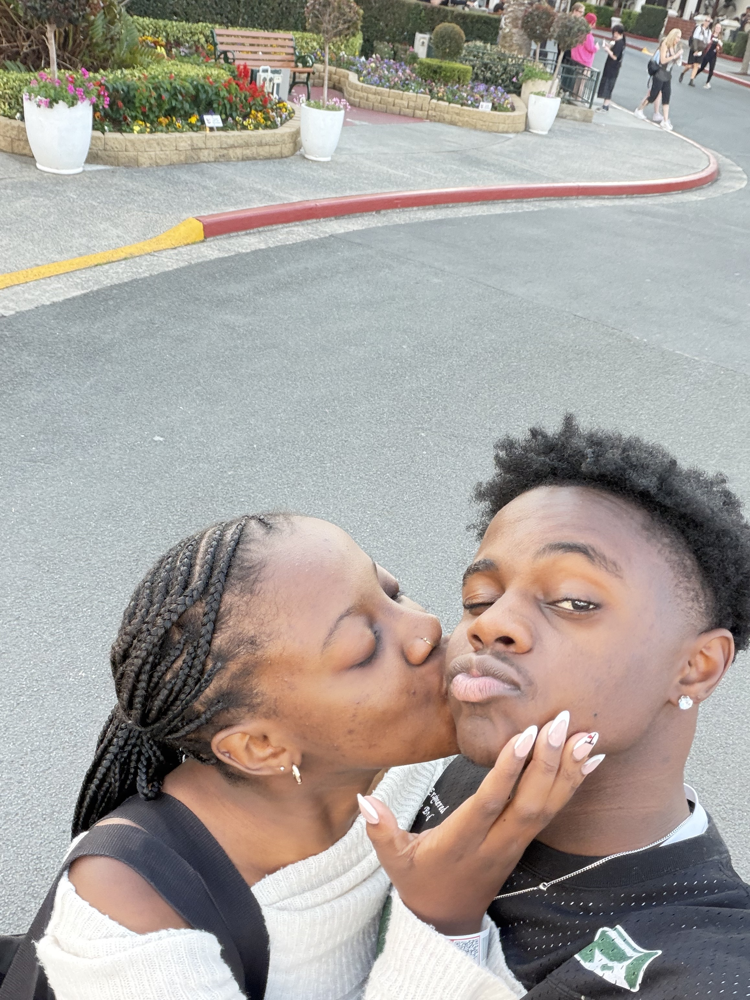

Dear Tanatswa,
Yoh it took you 7 years but here we are. *I was literally gonna write "It's been a month since I last saw you," but that was giving the wife of a soldier gone off to war LOL.* But seriously, this month has been so crazy in the best and worst ways.
Starting off with the highlights:
✦ Waking up to your naughty smile
✦ Being a rabbit in the wild with you
✦ You nje
Baby, from choosing out pajamas to getting into a random man's car and
crying about you leaving, ALL of it was perfect! (I need it in a
skaftin) It's beyond me to think that one person can just dim the
noise of the world and make it feel like we are the only people left.
Tanatswa you are so special and getting to experience that everyday is
such a blessing. Finding the words to describe my love for you, you as
a human and your heart is something I could spend everyday trying to
do and wake up the next day with more to say. YOU ARE SO AGHJGDEXG >૮
˶ᵔ ᵕ ᵔ˶ ა! (To translate -> "You are so tough!")
Spending 2 seconds with you affirms that i want to spend all of them with you. You are so easy to love (Sometimes) and I wouldn't have it any other way! My prayer is that as we grow, we never get tired of discovering each other. I pray for your walk with God, baby. May you continue to be molded into the man he created you to be. I pray blessing over your life and may everything you do be for the glory of God. I've learnt A LOT thus far and I can't wait to know who you are becoming. I'm so proud of you and I treasure you bro!
In every lifetime / universe where our waitress asks me to be your girlfriend, "I do"
Ndinokuda nemoyo wangu wese
Samukelisiwe Zwane♥
Dear Tanatswa,
Happy birthday my baby cakes, my sweetie pie, my cutie cakes DC (net mos for control). Baby I am so grateful for your life and I will always make sure that you are celebrated. Knowing you has been such a blessing and I am continuously grateful to get the opportunity to love you every day. You have taught me so much about myself, about the world and most importantly you have taught me how to love (insert Lil Wayne).
I love the parts of you that you may not think about. I love the "sometimes you can be funny" that comes out after hearing your laughter. I love your inquisitive brain and just the way you think, I love that you know exactly how to make all my bad days, good. I love that you can be funny (very rarely). I love you not only for the emotions you make me feel, cause those are constantly changing (you know that for SUREEEEE), but Charles, I love you for the person you are. You are just AHHH!!! You make me want to read like a crazy person, so I can become a better writer. Ordinary words fail to describe your greatness as a human, Tanatswa. I am grateful for this day fr cause somewhere somehow, you came into the world.
Thank you for all the memories that we have made thus far and the memories that we continue to make. I want to share all my laughter, all my joy, all my good times and all my not so great times with you. Thank you for being the realest nigga and for being my best friend fr (Had to break the news to Adele shame), for understanding me, for allowing me the space to share the deepest parts of who I am. Baby I pray over your life. I pray that as you grow, you grow in God as well. May He continue to guide you, teach and show you who He is every day. I pray blessing over every step you take and blessing over everything you do. Yah shame, I miss you and it really sucks that I can't give you a massive hug today and just have you as my jungle gym, but it's on days like this that I pray for and look forward to the future.
I hope your day is scrumptious and just filled with love. May this coming year bring you so much joy baby. Fr you are getting old vele??? (Shh I know what you are thinking, rich coming from me but please tu!)
Iwe wakakosha uye ndinokuda nemoyo wangu wese Tanatswa Charles Hlupeko
Samukelisiwe Zwane ♥
Dear Tanatswa,
You are genuinely the sweetest person I know, you are also nice to look at so that's a bonus😝. Thank you so much for sharing these past couple of months with me. I feel like I've experienced 8 years of life with you for real cause yoh! Thank you for the laughs, the jokes only we understand and for just getting me. I am so grateful that I can continue to love and choose you EVERYDAY my brother. I love you so fricken much like chilcken and I am so so proud and privileged to be able to stand by your side in this life thing. To many more my love!

Mmbah ♥You are so special to me Tanatswa.
I Love you (like a crazy person)
Samukelisiwe Zwane